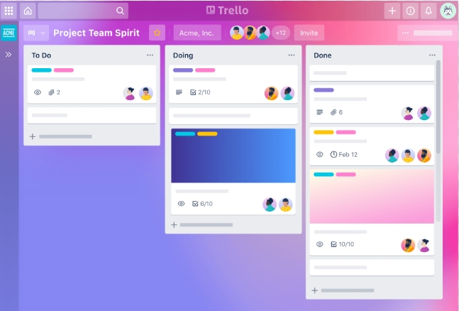
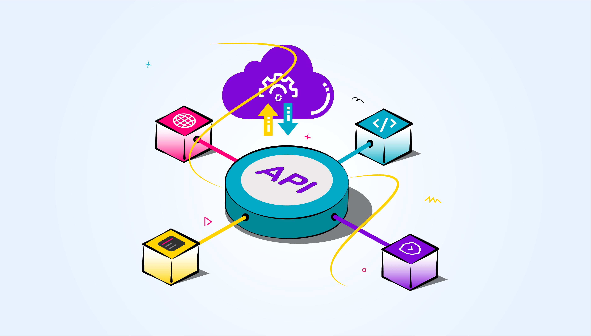

Habilidades e Estudos

Linguagens de Programação e marcação:
Python, JavaScript, Java, PHP, arduino, SQL, HTML, CSS

Modelagem e Gestão de Projetos:
Diagramas UML, Diagramas BPMN, Trello, Kanban, Ciclo PDCA, Arquitetura de Software, Versionamento (Git / GitHub)

APIs, MCP e Integração de Sistemas:
APIs REST, Model Context Protocol (MCP), Integração de sistemas, Automação de Processos com Python e Make
Habilidades não técnicas:
Resolução de problemas, Comunicação em público, Trabalho em equipe, Pensamento crítico.